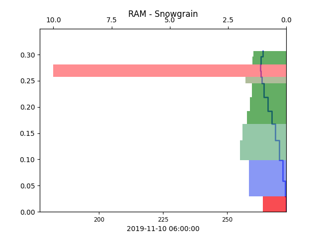
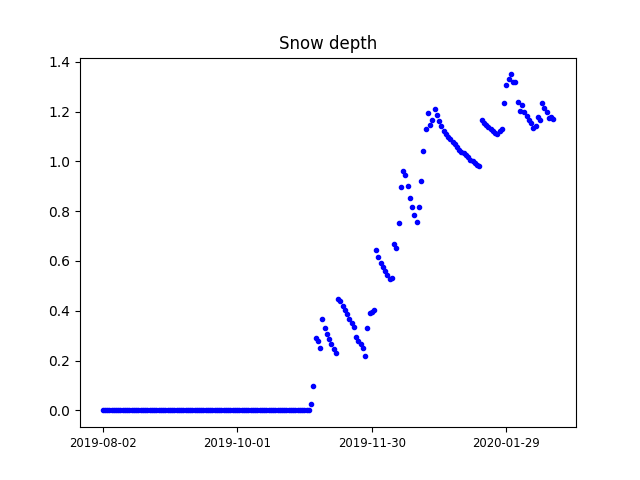
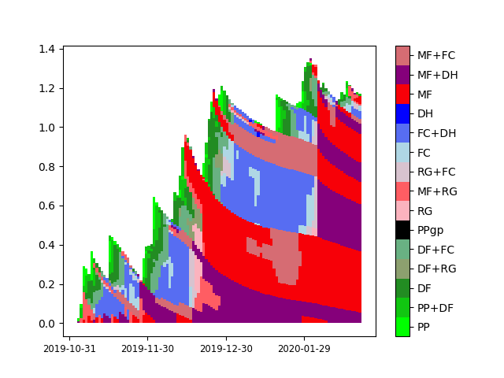

Plotting modelled snow stratigraphy¶
The module of interest is plots/stratiprofile/profilPlot.
Created on 6 avr. 2017 Modified 7. apr. 2017 viallon
- Authors:
Pascal Hagenmuller
Léo Viallon-Galinier
Mathieu Fructus
- plots.stratiprofile.profilPlot.dateProfil(axe, axe2, value, value_dz, value_grain=None, value_ram=None, xlimit=(None, None), ylimit=None, hauteur=None, color='b', cbar_show=False, legend=None, **kwargs)[source]¶
Plot the vertical profile of the snowpack of one variable at a given date. If grain type and RAM resistance are given, these infos are added in the plot.
- Parameters:
axe (matplotlib axis) – figure axis
axe2 (matplotlib axis) – figure axis (there are two axis on same plot: one for the variable, the other for snowgrain and RAM)
value (numpy array) – variable to be plot
value_dz (numpy array) – thickness value for all the layers considered
value_grain (numpy array) – grain type for each layer
value_ram (numpy array) – Résistance à l’enfoncement (traduction à trouver)
xlimit (tuple) – give the x-limit for the variable (from limits_variable in proreader)
ylimit (float) – give the upper y-limit for the variable (typically the snow depth)
hauteur (float) – y-value for a black line in order to better see the interaction with seasonal profile
color (boolean) – color name
cbar_show – show the colorbar for grain type
legend (datetime object or str) – legend (usually the date)
from snowtools.utils.prosimu import prosimu_auto import matplotlib.pyplot as plt from snowtools.plots.stratiprofile.profilPlot import dateProfil point = 100 time = 100 with prosimu_auto('/rd/cenfic3/cenmod/home/viallonl/testbase/PRO/PRO_gdesRousses_2019-2020.nc') as ff: dz = ff.read('SNOWDZ', selectpoint=point, fill2zero=True)[time, :] var = ff.read('SNOWTEMP', selectpoint=point)[time, :] ram = ff.read('SNOWRAM', selectpoint=point)[time, :] grain = ff.read('SNOWTYPE', selectpoint=point)[time, :] time = ff.readtime()[time] ax = plt.gca() ax2 = ax.twiny() dateProfil(ax, ax2, var, dz, value_grain=grain, value_ram=ram, legend=str(time)) plt.show()

Example of plots that can be obtained with this function (example of the code snippet provided).¶
- plots.stratiprofile.profilPlot.heightplot(ax, value, value_ep, time, legend=None, color='b', direction_cut='up', height_cut=10.0)[source]¶
Plot the variable at a specific place in the snowpack. It is given with a height (in centimeter) and a direction. direction=’up’ means from ground to top of the snowpack direction=’down’ means from top of the snowpack to ground For example, if you want to plot 5 cm under the snowpack surface, you choose: height_cut=5 and direction_cut=’down’
- Parameters:
ax (matplotlib axis) – figure axis
value (numpy array) – Value to be plot
value_ep (numpy array) – thickness value for all the layers considered
time (numpy array) – Time values
color (str) – color name
legend (str) – legend for the colorbar
direction_cut (str) – legend for the colorbar
height_cut (int) – legend for the colorbar
- plots.stratiprofile.profilPlot.saison1d(ax, value, time, legend=None, color='b.', title=None, ylimit=None)[source]¶
Plot the variable value across time for bulk variables (not variables per layer, e.g. total SWE, albedo, etc.).
- Parameters:
ax (matplotlib axis) – figure axis
value (numpy array) – Value to be plot
time (numpy array) – Time values
legend (str) – legend for the colorbar
color (str) – color name
title (str) – title (date for member plots for example)
ylimit (float) – give the upper y-limit for the variable (defaults to maximum snow depth)
from snowtools.utils.prosimu import prosimu_auto import matplotlib.pyplot as plt from snowtools.plots.stratiprofile.profilPlot import saison1d point = 100 with prosimu_auto('/rd/cenfic3/cenmod/home/viallonl/testbase/PRO/PRO_gdesRousses_2019-2020.nc') as ff: var = ff.read('DSN_T_ISBA', selectpoint=point) time = ff.readtime() ax = plt.gca() saison1d(ax, var, time, title='Snow depth') plt.show()

Example of plots that can be obtained with this function (example of the code snippet provided).¶
- plots.stratiprofile.profilPlot.saisonProfil(ax, dz, value, time, colormap='viridis', value_min=None, value_max=None, legend=None, cbar_show=True, title=None, ylimit=None)[source]¶
Plot a snow profile along time taking into account layer thicknesses for a realistic plot.
- Parameters:
ax (matplotlib axis) – figure axis
dz (numpy array) – layer thicknesses
value (numpy array) – Value to be plot (color of the layer). Should have the same dimension as
dztime (numpy array) – Time values
colormap (str or matplotlib colormap) – Colormap to use. Some custom colormaps are defined for specific variables:
grains,echelle_log,echelle_log_sahara,ratio_cisaillement,tempKandlwc.legend (str) – legend for the colorbar
value_min (float) – minimum value for colorbar
value_max (float) – maximum value for colorbar
cbar_show (bool) – Whether or not to plot the colorbar
title (str) – title of the graph
ylimit (float) – give the upper y-limit for the variable (defaults to the maximum snow depth across season)
Note that
dzshould not containnanvalues. Layers that are not used sould be filled with a zero value for depth.If you plan to add data, note that the x axis is not a time axis but an axis where the values are integers corresponding to the index of the date dimension (sue to limitations of the undelying matplotlib function).
Below is proposed a snippet of code that provide an example for such plot. Note that additional options may be necessary for some files (e.g. specification of tile).
from snowtools.utils.prosimu import prosimu_auto import matplotlib.pyplot as plt from snowtools.plots.stratiprofile.profilPlot import saisonProfil point = 100 with prosimu_auto('/rd/cenfic3/cenmod/home/viallonl/testbase/PRO/PRO_gdesRousses_2019-2020.nc') as ff: dz = ff.read('SNOWDZ', selectpoint=point, fill2zero=True) var = ff.read('SNOWTYPE', selectpoint=point) time = ff.readtime() ax = plt.gca() saisonProfil(ax, dz, var, time, colormap='grains') plt.show()

Example of plots that can be obtained with this function (example of the code snippet provided).¶